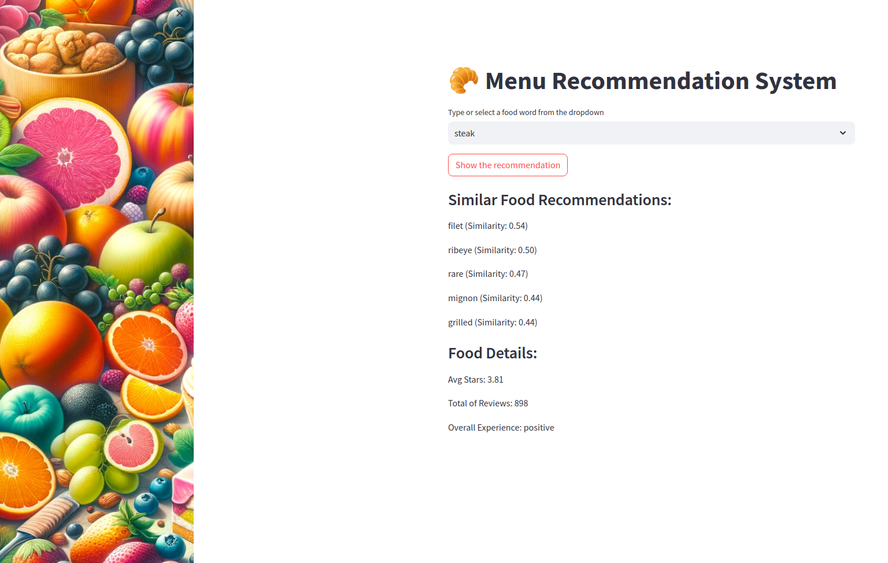
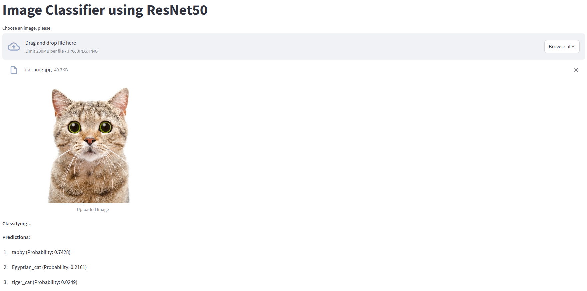
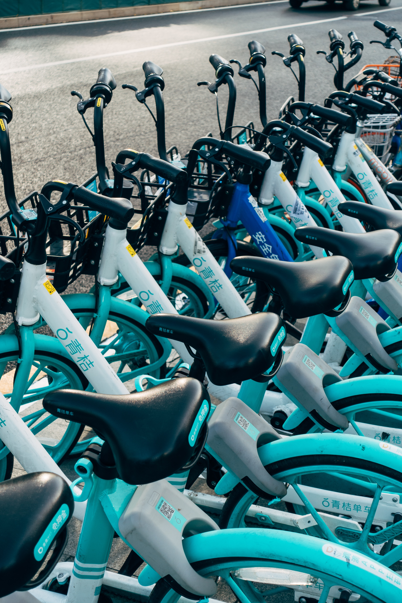
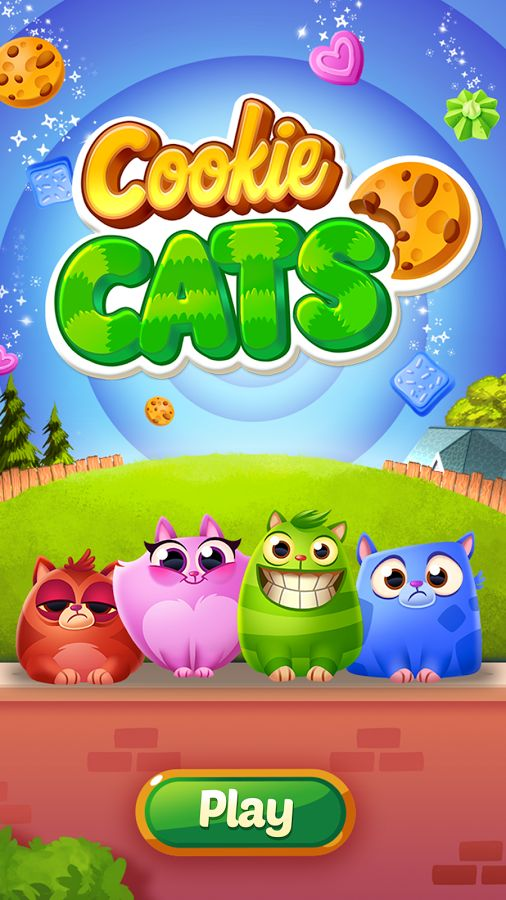
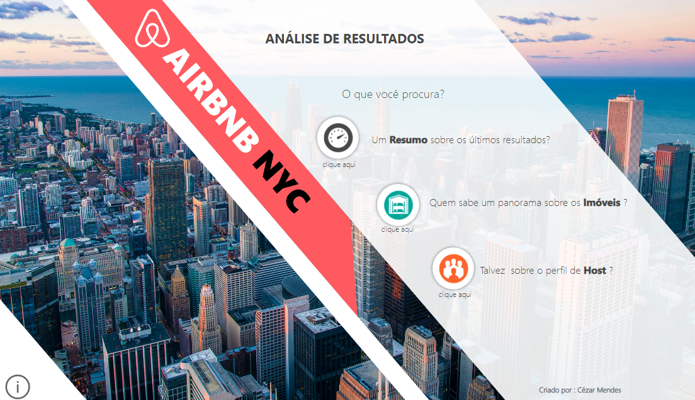

Dec 21, 2023
This project presents an innovative approach to restaurant menu optimization through sentiment analysis of customer reviews.
It utilizes advanced natural language processing (NLP) techniques, employing frameworks like NLTK, RoBERTa, SpaCy, and Word2Vec,
to analyze and interpret customer feedback from Yelp reviews.


Developing a RESTful API using FastAPI to accept an image and return the image type using the ResNet50 (ImageNet) model.

Machine Learning project focuses on predicting bank customer churn, which refers to the tendency of customers to stop using a company's products or services.
Machine Learning projects focusues on predict and analyze credit risk, enhancing the decision-making process for lenders.

Analyze a dataset featuring hourly bike rentals, weather conditions, and holiday data in Seoul, focusing on identifying and rectifying any missing values, outliers, or data inconsistencies.

This data analysis project aims to evaluate the impact of modifications made to the gameplay of the mobile game Cookie Cats. To effectively measure and validate this potential change, the A/B testing methodology was implemented.

Dashboard design using data from airbnb NYC, using Power BI for visualization and Pentaho Data Integration (PDI) for ETL.